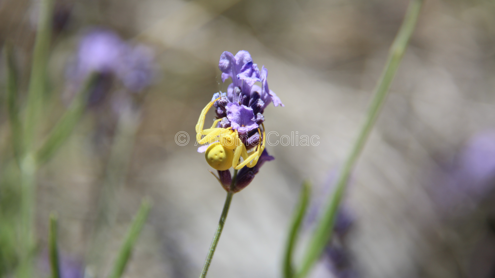

Il était une fois…
Un jeune garçon curieux et éveillé, ne tenant pas en place, passionné de nature et d'entomologie
dont le seul désir
était d'explorer sans relâche le monde qui l'entoure et trouver des moyens de l'enrichir
davantage.
Utilisez les flèches du clavier pour continuer…
Un beau jour,
entre deux escapades au jardin, il décida d'aller faire un tour dans le bureau où trônait le PC
familial, bien en
évidence.
Il commença à naviguer entre les menus, appuyer sur les touches et surfer sur le web. Petit à petit,
il découvrit
Windows et prit plaisir à explorer chaque fonctionnalité dans ses moindre recoins.
Il ne le savait pas encore, mais ce nouvel outil allait devenir son exutoire, et se placer au cœur de
son futur projet professionnel : devenir développeur.
Ce garçon, c'est moi. Antoine.
Mais je n'ai pas toujours su que l'informatique était ma vocation.
En 2017, après obtention de mon bac S, j'ai longuement hésité avant de prendre une décision quant à
mon orientation. J'aimais les sciences, mais je n'étais pas à l'aise avec les méthodes
d'enseignement des écoles préparatoires ; j'aimais la littérature, mais je ne lisais pas assez.
Un jour il fallut prendre une décision.
En comparant mes notes dans toutes les matières, je me suis dit qu'il n'y avait qu'un choix possible
pour moi : les langues. J'ai donc entamé une licence de langues étrangères appliquées sur 3 ans,
puis j'ai compris que cette formation n'était pas faite pour moi.
Je passais toujours beaucoup de temps devant l'ordinateur. J'aime créer, innover, découvrir. À vrai
dire, la technologie me fascinait. Je me suis alors lancé dans le
développement informatique et j'ai intégré l'Institut G4 en 2020 pour mener à bien ce projet de vie.
Mon expérience
Ma première prise de contact avec le milieu professionnel fut dans le domaine de l'audiovisuel ; j'ai effectué mon stage
de troisième chez France 3.
Pendant une semaine, j'ai pu m'immiscer dans le quotidien de journalistes, afin de me faire une idée de ce qu'est
l'organisation en entreprise, et en apprendre plus sur les technologies utilisées dans ce métier.
Moi-même passionné de photographie et de nouvelles technologies, je me sentais comme chez moi dans cet
environnement.
Et j'en ai tiré beaucoup de positif, surtout sur le plan humain. Chaque personne que j'ai rencontrée à France 3
était
accueillante, ouverte d'esprit, bienveillante…
J'ai été agréablement surpris des qualités humaines des employés de cette
société et cela m'a donnée envie de renouveler l'expérience.
7 ans plus tard, après avoir rejoint l'Institut G4, j'ai pu avoir la chance d'intégrer Natural Solutions, une agence web
de gestion des données de biodiversité qui a pour mission de protéger l'environnement. J'ai intégré cette entreprise car
je souhaitais travailler en accord avec mes valeurs, et je ne regrette pas d'avoir fait ce choix.
Ont eu lieu dans un premier temps les travaux visant à aider au développement d’ecoTeka, application de gestion de
données d’arbres. Cette application a pour but de permettre aux responsables d’espaces verts, aux élus et aux citoyens
d’inventorier des arbres, et ma mission a été d’apporter une quantité supplémentaire de données à OpenStreetMap et de
coopérer avec des intégrateurs, développeurs, naturalistes, botanistes sur tout ce qui touche à l’open data (donnée
ouverte).
J'ai d'abord rassemblé des centaines de jeux de données d'arbres sur des plateformes d'open data dans un fichier Excel
pour automatiser par la suite leur importation dans ecoTeka grâce à Talend, un ETL (Extract Transform Load). Puis j'ai
"cleansé" (épuré) la donnée grâce à ce logiciel, dans le but d'éliminer les coquilles dans les
jeux de données déposés par les responsables espaces verts des communes.
Dans un second temps ont eu lieu les travaux de testing sur Scrum Manager et sur les applications Reneco, client de
Natural Solutions. Ces applications sont nombreuses, elles sont accessibles à partir d'un portail (Portal) qui ne les
affiche que si des identifiants ont été accordés à l'utilisateur par le responsable IT.
Parmi elles, j'ai travaillé sur Central Monitoring, une interface permettant de monitorer (consigner) les réplications
du réseau informationnel de
Reneco, les instances de bases de données en lien avec une application et les labels utilisés dans l'application ;
Console Admin, qui permet de mieux caractériser chaque instance de base de données ;
Ecollection Veterinary qui permet de tracer les analyses réalisées au laboratoire sur des prélèvements biologiques issus
d'outardes, faucons ou tout autre prélèvement nécessaire au bon fonctionnement de l'élevage et à la prévention de
maladies sur les sites ;
et Parameter, qui historise les changements des valeurs des paramètres des instances d'applications de chaque centre,
pour pouvoir avoir des données différentes au cours de différentes années.
Ma tâche était de tester de bout-en-bout, avec Cypress, chacune de ces applications, à l'exception d'ecoTeka pour
laquelle j'ai suivi ses développeurs dans leur travail. L'application étant dockerisée sous WSL 2, j'ai acquis des
compétences techniques quant à la gestion de conteneurs sous Linux ; j'ai aussi progressé en Javascript et au requêtage
de l'API, bien que
mon niveau à cette période ait été insuffisant pour comprendre le fonctionnement complet de l'application.
Mes projets
Cette section regroupe mes projets les plus marquants au cours de mes deux années à l'Institut G4.
Certains sont encore en cours et bien d'autres sont à venir, alors restez à l'affût !
The Dome
Ce site web, entièrement conçu en HTML5 et CSS3 et Javascript fut mon tout premier site web. C'est une billetterie
pour
une salle de concert, avec un calendrier en Javascript montrant les dates pour chaque concert, rattaché à la base de
données.
Le carousel en page d'accueil est fait en CSS, mais il est un peu lent comme c'était la première fois que je me
familiarisais avec les normes du langage. Le site est responsive.

Student Optimizer
Student Optimizer est un site qui a pour but de donner des conseils aux étudiants qui sont en alterance pour les aider à
progresser dans leurs tâches aussi bien en entreprise qu'en période scolaire.
Le concept est simple, d'un côté vous visionnez nos conseils et de l'autre, vous discutez avec des gens qui sont dans la
même situation que vous pour les aider (ou vous faire aider).
Développé par notre équipe d'étudiants nous sommes partis d'une idée : un site participatif où tout le monde pourrait
s'entraider.
Suite à cette idée nous avons commencé à développer celle-ci dans les locaux de l'institut G4 et nous continuons à
apporter des changements sur le site pour assurer sa pérennité.
Ce projet, bien qu'encore en cours de conception, m'a appris beaucoup sur le plan organisationnel et technique.
Chacun des membres du groupe a des compétences et atouts différents, ce qui rend le travail de découpage des tâches
facile à exécuter. La bonne communication qui règne au sein du groupe est définitivement un atout pour l'avancement
du travail, et nous permet aussi d'apprendre dans de bonnes conditions.
Il n'y a pas de contraintes concernant le développement du site si ce n'est qu'il doit être hébergé. Nous avons choisi
d'utiliser Bootstrap pour le frontend du site, mySQL pour le backend et GitLab sera notre outil de partage.
La photographie et la poésie
« C’est directement, et parfois profondément,
que l’activité du photographe influe
sur ce que la poésie cherche à être. »
Envoûtant, le silence de sa sérénité !
L'âme d'un sous-bois bercée de plénitude

Révèle, infinie, la voix de la Nature

Aux puissantes, mais délicates créatures…

Les percées de lumière offrent leur quiétude

Immense enchantement en son intimité

Mystérieuse grandeur

Inidicible bonheur.